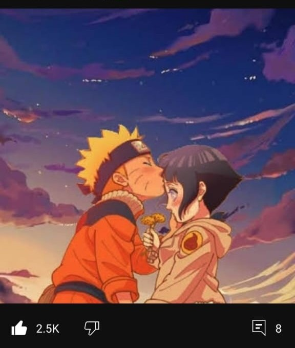
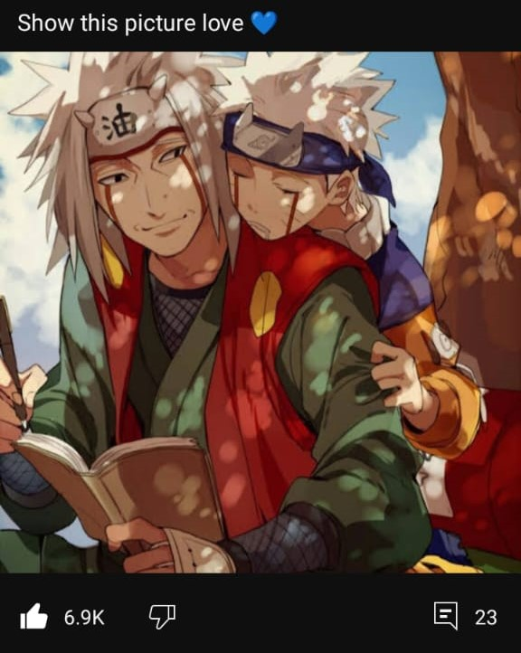
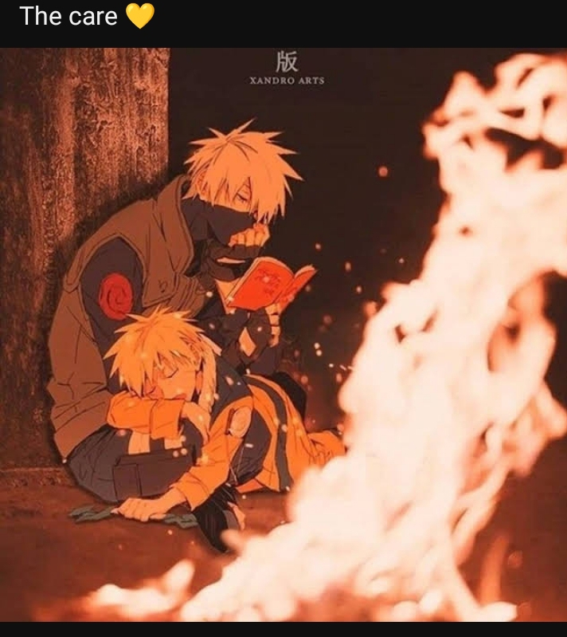
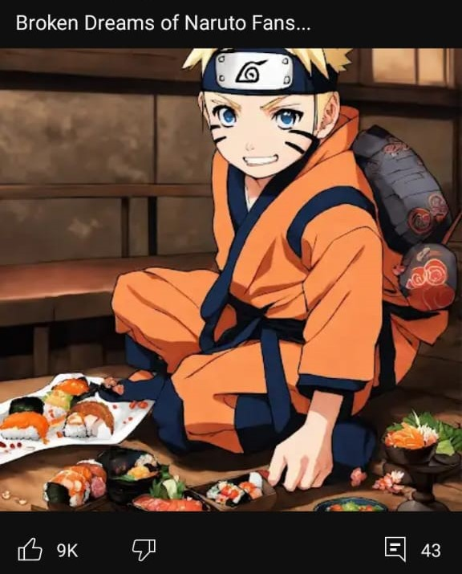
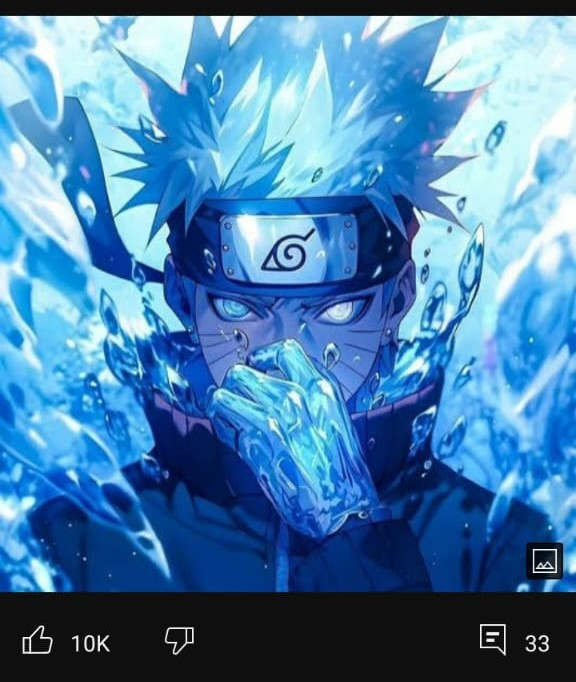
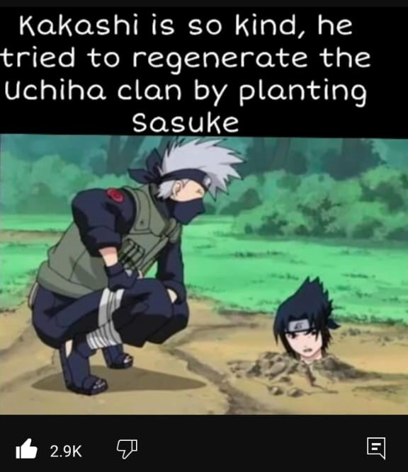
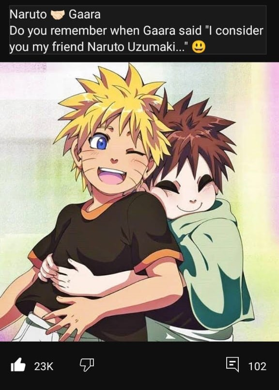
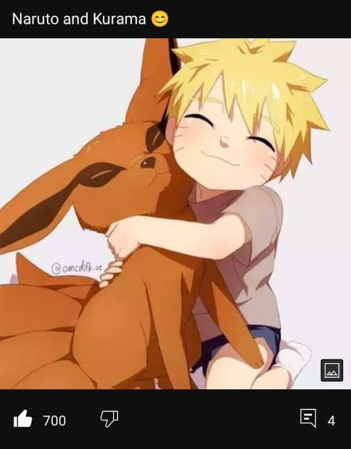
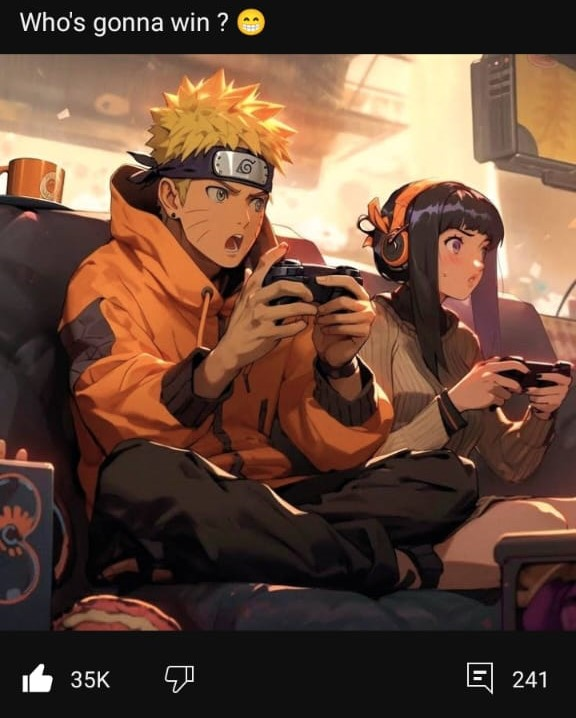
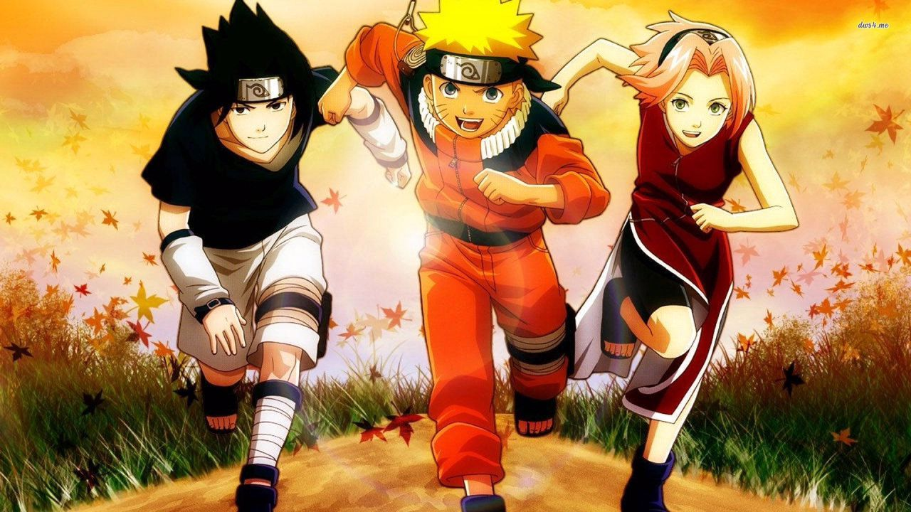

Naruto is an iconic character in anime and manga, known for his determination, perseverance, and indomitable spirit.
Naruto Uzumaki, the epitome of resilience and strength. His journey from an outcast to a hero is not just a tale of ninja prowess but a testament to the human spirit. With unwavering determination and an unyielding belief in his abilities, Naruto defies the odds time and again. His willingness to sacrifice for the greater good, to protect those he loves, is truly inspiring. But beyond his impressive skills in combat, it's his empathy, his ability to understand and connect with others, that truly sets him apart. Naruto teaches us that true strength comes not from power alone, but from the bonds we forge and the love we share. He embodies the idea that no matter how many times life knocks you down, you can always rise again, stronger than before. Naruto, a beacon of hope and an inspiration to us all. Believe it this boy is the goat ! 🍥🔥
Naruto Uzumaki grew up as an orphan in the Hidden Leaf Village, ostracized by the villagers because he was the host of the Nine-Tailed Fox, a powerful and destructive creature. He was often seen as a troublemaker and struggled to gain recognition and acknowledgment from others. Despite facing adversity and loneliness, Naruto maintained a cheerful and determined attitude, aspiring to become the strongest ninja in the village and to earn the title of Hokage, the leader of the village.
This is Naruto and Hinata. Naruto and Hinata's childhoods were marked by different challenges, but they shared common themes of loneliness, perseverance, and the search for acceptance.
Here we have Naruto and Jiraya Seinsei. He was like a father for Naruto.
Jiraiya Sensei, master of ninja arts and guardian of wisdom. Among the Legendary Three, his name resonates with unmatched power. Descendant of a long line of masters, Jiraiya transcended the boundaries of possibility, skillfully blending strength and wisdom. His sharp mind and strategic intelligence have inspired generations of shinobi. But what truly sets him apart is his noble heart and fervent desire to protect those dear to him. Even in the darkest of times, his determination never wavers. Jiraiya Sensei, a legend among legends, whose name will forever be etched in the annals of ninja history.
Kakashi Sensei and Naruto share a complex and deeply meaningful relationship throughout the Naruto series. Kakashi Hatake, initially introduced as the enigmatic and mysterious leader of Team 7, becomes a mentor and father figure to Naruto, guiding him on his journey to becoming a ninja and ultimately a hero.
Kakashi takes on the role of Naruto's mentor, providing him with valuable guidance, training, and wisdom. Despite Naruto's initially brash and impulsive nature, Kakashi recognizes his potential and strives to help him grow both as a ninja and as a person. Kakashi seinsei instills in Naruto the importance of the ninja code, emphasizing values such as teamwork, perseverance, and self-sacrifice. He often imparts valuable life lessons through his teachings and leads by example, demonstrating the true meaning of being a ninja.
Both Kakashi and Naruto have experienced loss and loneliness in their lives. Kakashi's past, including the death of his teammates Obito Uchiha and Rin Nohara, mirrors Naruto's own feelings of abandonment and isolation as an orphan. This shared understanding forms a strong bond between them.
My boy is very cute right😊
He is the goat, this image is really amazing!!!!😎
Well.....at least he tried...
Naruto and Gaara share a profound connection rooted in their similar experiences of loneliness, rejection, and the search for identity. Despite their initial status as adversaries, their relationship evolves into one of understanding, empathy, and mutual respect.
Naruto Uzumaki, the spirited and determined protagonist of the series, grew up as an orphan ostracized by his village due to being the host of the Nine-Tailed Fox. His childhood was marked by a longing for acknowledgment and a desire to prove himself worthy of love and acceptance. Naruto's journey is characterized by his unwavering belief in the power of friendship and his determination to break the cycle of hatred that plagues the ninja world.
Gaara, on the other hand, is introduced as a formidable and merciless adversary, the jinchuriki of the One-Tailed Shukaku. He grew up in the harsh environment of the Hidden Sand Village, subjected to hatred and fear from his own people due to the circumstances of his birth. Gaara's early life was defined by a sense of isolation and a belief that he could only find solace in the strength of his own power.
Their paths intersect during the Chunin Exams, where they engage in a fierce battle that serves as a catalyst for their transformational journey. Through their encounter, Naruto recognizes the pain and loneliness within Gaara's heart, seeing a reflection of his own struggles. Despite their differences, Naruto extends a hand of understanding and compassion to Gaara, offering him hope for a different path.
As the series progresses, Naruto and Gaara's relationship deepens as they bond over their shared experiences and aspirations. Naruto's unwavering belief in the possibility of change inspires Gaara to confront his inner demons and strive for redemption. Through their interactions, they learn that true strength comes not from power alone, but from the connections forged with others.
In the end, Naruto and Gaara emerge as allies and kindred spirits, united by their shared journey of self-discovery and the belief in a brighter future. Their relationship serves as a testament to the transformative power of empathy, forgiveness, and the bonds of friendship in overcoming even the deepest scars of the past.
The relationship between Naruto and Kurama, the Nine-Tailed Fox, is one of initial conflict and eventual friendship. Naruto, as Kurama's host, endured isolation due to the fear of the Nine-Tails' power. Over time, Naruto's unwavering kindness and determination earned Kurama's respect. Their bond deepened during battles, culminating in a selfless sacrifice to protect their loved ones. This journey reflects themes of redemption and the transformative power of compassion.
My boy is very cute sasuke too😍
Hinata of course cause my boy is a gentleman
Naruto Sasuke and Sakura